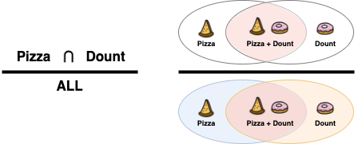
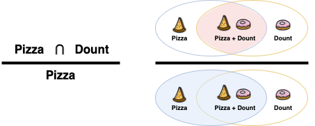
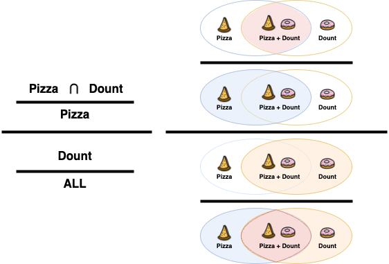

Association rule analysis is an algorithm that creates a set of rules that tell how often two sets of items occur together. In simple terms, it's an algorithm that uses consumer purchase history data to conclude that "customers who buy item X are more likely to buy item Y." This allows people to identify patterns and correlations that occur in their data set and use those patterns to gain helpful information and insights. So, how do you define a "rule"? A rule in association rule analysis has two parts: an "antecedent" and a "consequent". The antecedent is the preceding part of the rule or the cause or condition that causes the result of the rule to occur, given some condition. The consequent is the following part of the rule or the result that occurs when the condition is met. For example, suppose you have a rule that says that if customers buy a pizza, they are more likely to buy a donut. The "if customers buy a pizza" part is the antecedent, and the "they are more likely to buy a donut" part is the consequent.
So, what makes a good rule among the myriad of rules out there? Three main indicators reveal a rule's effectiveness: support, confidence, and lift. To make it easier to understand, the "pizza" and "donut" examples together will be used. First, support indicates the frequency of occurrence of a particular rule, i.e., it measures how often a particular rule occurs in a dataset, with higher support values indicating that the rule occurs more frequently. Support is calculated as follows.
Applying the pizza and donuts example, this is the probability of a customer making an intersection transaction that includes both "pizza" and "donuts" out of all purchases.
Next, confidence indicates the probability of an outcome occurring when a condition is met. In other words, it measures how reliable a rule is, and a high confidence value indicates that the rule is trustworthy. Confidence looks like this.
Applying the pizza and donut example, Confidence is the probability that a customer who bought a "pizza" also bought a "donut". So, in the denominator, enter the number of customers who bought pizza, and in the numerator, the number of intersection customers who bought both pizza and donuts.
Lift represents the relative importance of a rule, or in other words, it measures how useful a rule is for predicting outcomes. Lift is calculated as follows.
According to the above equation, if the lift is greater than 1, then buying A will increase the likelihood of buying B, and conversely, if it is less than 1, then buying A will decrease the likelihood of buying B. Also, if the lift is equal to 1, then the conditional and consequential clauses are independent of each other, meaning that there is no significant association between the rules.
Using the pizza and doughnut example, it is the ratio of the increase in the probability of a doughnut purchase when a pizza is purchased compared to the probability of a doughnut purchase when a pizza is not purchased. Therefore, in the denominator, the number of customers who purchased a doughnut out of all customers who purchased a pizza is written, representing the probability of a doughnut purchase when a pizza is not purchased. In the numerator, the same confidence factor seen earlier is used to represent the probability of a doughnut purchase when a pizza is purchased.
Ideally, when creating rules from a given set of data, one wants to explore the number of possible cases to find the ones with the highest support, confidence, and improvement. However, as the number of items increases, the computational time increases exponentially. For this reason, the Apriori algorithm was proposed to generate association rules by considering only frequent item sets. The Apriori algorithm is a widely used algorithm in association rule mining to discover frequent itemsets and extract association rules based on them. This algorithm finds frequent itemsets and extracts association rules based on them. To give an example of how this algorithm works, let's first assume that the support of the itemset {𝐴}, i.e., 𝑃(𝐴), is 0.1. Then, the support of the itemset {𝐴,𝐵}, no matter how high it is, will never exceed 0.1. This is because the probability of 𝐴 appearing alone, 𝑃(𝐴), will be greater than or equal to the probability of 𝐴 and 𝐵 appearing together, 𝑃(𝐴,𝐵). {𝐴,𝐵} is called a superset of {𝐴} and {𝐵}.Based on this, if the support of an arbitrary set of items does not exceed a certain threshold, then the support of the superset of that set of items will obviously be smaller than that threshold and, therefore, cannot be recognized as a helpful rule. This means that rules for itemsets that do not satisfy the minimum support requirement do not need to be computed in the first place.

Based on the above image, if the support of the item set {𝐴,𝐵} does not meet the minimum support requirement set by the user, we will exclude {𝐴,𝐵}, as well as the transcendental sets of {𝐴,𝐵}, {𝐴,𝐵,𝐶}, {𝐴,𝐵,𝐷}, and eight other cases from the calculation. This process allows the Apriori algorithm to achieve computational efficiency.
In the ARM phase, association rule analysis is performed on a dataset of used vehicle characteristics to identify associations between vehicle characteristics. In particular, the focus is on understanding the relationship between price and vehicle characteristics in the used car market. First, association rules are used to identify the association between certain engine types, fuel types, mileage, vehicle age, etc., and price. Association rules are also used to identify which characteristics impact the price of a used vehicle. For example, a rule might indicate, "Newer vehicles are more likely to sell for a higher price." Beyond this, association rules can be used to understand vehicle buying patterns by discovering patterns in which particular combinations of characteristics appear more often in specific price categories. In this context, the Apriori algorithm is used to analyze the association rules between features and prices of used vehicles to understand price-shaping factors and buyer preferences in the used car market.